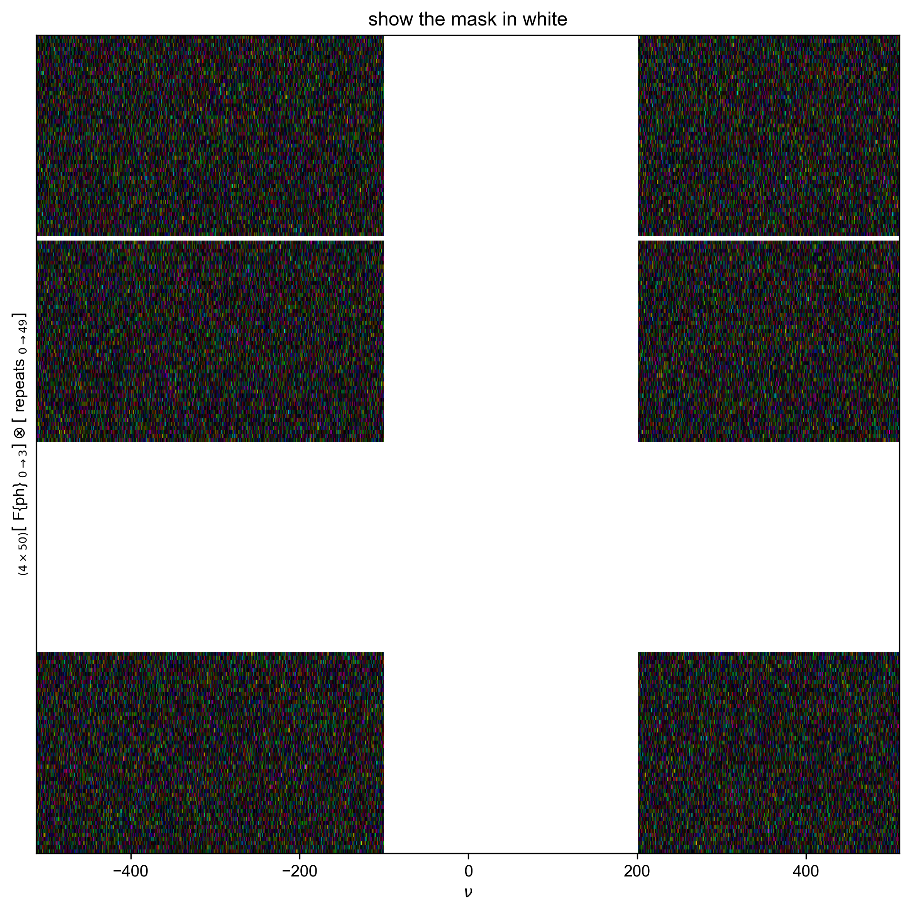

Note
Go to the end to download the full example code
Time-Domain Noise¶
Here, we want to calculate the time-domain variance to use in error propagation. But, to make sure we calculate only noise, we want to mask out portions of the frequency domain. We propose that if we use a unitary transform, Parseval’s theorem tells us we can calculate \(\sigma_t^2\) (time domain variance) directly from the frequency-domain variance, i.e. \(\sigma_ u^2=\sigma_t^2\). To confirm this, we construct a “spectrum” of pure noise and generate a frequency-masked noise, and show that is the same as the unmasked time-domain.
If we apply just FT as we normally would the std in the frequency domain is: array([0.03132421, 0.03108855, 0.03141074, 0.03129469, 0.03178031,
0.03147097, 0.03128327, 0.03114271, 0.03122219, 0.03133753,
0.03115333, 0.03132641, 0.03148578, 0.03084278, 0.03125433,
0.03110511, 0.03147764, 0.03150526, 0.03094986, 0.03132916,
0.03139127, 0.03129332, 0.03143758, 0.03071309, 0.03156495,
0.03131228, 0.03092108, 0.03118614, 0.03139522, 0.03090492,
0.03160868, 0.03156555, 0.03123634, 0.03116079, 0.03130961,
0.03139629, 0.03096175, 0.03140995, 0.0311653 , 0.03115921,
0.03172289, 0.03135393, 0.03120997, 0.03142269, 0.03082577,
0.03102424, 0.03140855, 0.03115062, 0.03165211, 0.03133737])
+/-None
dimlabels=['repeats']
axes={`repeats':array([ 0, 1, 2, 3, 4, 5, 6, 7, 8, 9, 10, 11, 12, 13, 14, 15, 16,
17, 18, 19, 20, 21, 22, 23, 24, 25, 26, 27, 28, 29, 30, 31, 32, 33,
34, 35, 36, 37, 38, 39, 40, 41, 42, 43, 44, 45, 46, 47, 48, 49])
+/-None}
These values are NOT the same so we need a unitary FT for this to work
When we apply a unitary FT the std over all the frequency domain is: array([1.00139574, 0.99386217, 1.00416208, 1.00045216, 1.01597682,
1.00608773, 1.00008716, 0.99559356, 0.99813431, 1.00182174,
0.99593289, 1.0014661 , 1.00656111, 0.98600521, 0.99916187,
0.99439153, 1.00630065, 1.00718377, 0.98942845, 1.00155423,
1.00353964, 1.0004083 , 1.0050202 , 0.98185911, 1.00909202,
1.0010143 , 0.98850836, 0.99698184, 1.00366599, 0.98799179,
1.01049013, 1.00911106, 0.9985869 , 0.99617161, 1.00092924,
1.00370021, 0.98980837, 1.00413679, 0.99631583, 0.99612115,
1.01414109, 1.00234585, 0.9977436 , 1.00454414, 0.98546142,
0.99180629, 1.00409206, 0.99584639, 1.01187831, 1.00181645])
+/-None
dimlabels=['repeats']
axes={`repeats':array([ 0, 1, 2, 3, 4, 5, 6, 7, 8, 9, 10, 11, 12, 13, 14, 15, 16,
17, 18, 19, 20, 21, 22, 23, 24, 25, 26, 27, 28, 29, 30, 31, 32, 33,
34, 35, 36, 37, 38, 39, 40, 41, 42, 43, 44, 45, 46, 47, 48, 49])
+/-None}
Because we have no signal, this again corresponds to our noise.
1: show the mask in white |||(None, None)
/home/jmfranck/base/lib/python3.11/site-packages/numpy/core/fromnumeric.py:3787: RuntimeWarning: Degrees of freedom <= 0 for slice
return _methods._var(a, axis=axis, dtype=dtype, out=out, ddof=ddof,
The std when using the mask on unitary data is: array([1.00838139, 0.99916422, 1.01308768, 1.00460731, 1.01770183,
1.01140716, 1.00254862, 1.00002442, 0.98565718, 1.0083499 ,
1.00310731, 1.00594958, 1.02275678, 0.98087853, 0.99694615,
1.00372693, 1.00074357, 1.01116729, 0.9937956 , 1.01231114,
1.00388354, 1.00295015, 0.99848826, 0.98598775, 1.01603972,
0.98778099, 0.9882323 , 1.00741916, 1.00536551, 0.98000725,
1.01667383, 0.99938928, 1.00793848, 0.9970008 , 1.0024238 ,
1.00351112, 0.98660249, 1.00344497, 1.00530851, 0.99897913,
1.0142547 , 1.00381237, 0.99457255, 1.01259137, 0.98900029,
0.99499245, 1.00602537, 0.99991627, 1.01043979, 1.00819247])
+/-None
dimlabels=['repeats']
axes={`repeats':array([ 0, 1, 2, 3, 4, 5, 6, 7, 8, 9, 10, 11, 12, 13, 14, 15, 16,
17, 18, 19, 20, 21, 22, 23, 24, 25, 26, 27, 28, 29, 30, 31, 32, 33,
34, 35, 36, 37, 38, 39, 40, 41, 42, 43, 44, 45, 46, 47, 48, 49])
+/-None}
Because we can use the mask in the DCCT domain to exclude signal, that is the number we will want, in general.
However, here we know that all of our data is noise, and so we should make sure that this matches the naive, direct time-domain calculation.
If it does, all the following numbers will be about 1.0:
array([1.00664921, 1.00520245, 1.00878167, 1.00388282, 1.00225371,
1.00510963, 1.00228803, 1.00390584, 0.98739319, 1.00613318,
1.00657248, 1.00458332, 1.01623664, 0.99457355, 0.9977232 ,
1.00897789, 0.99376561, 1.00409832, 1.0045629 , 1.01110341,
1.00008428, 1.00277966, 0.99383243, 1.00431343, 1.00676331,
0.98723341, 0.99957618, 1.01065479, 1.0016896 , 0.99194746,
1.00597245, 0.99074301, 1.00995167, 1.00097723, 1.00187143,
0.99979247, 0.99632148, 0.99942474, 1.00821271, 1.00299941,
1.00016525, 1.00134041, 0.99699684, 1.00768254, 1.00370199,
1.00340404, 1.00228407, 1.00427032, 0.99842893, 1.0066963 ])
+/-None
dimlabels=['repeats']
axes={`repeats':array([ 0, 1, 2, 3, 4, 5, 6, 7, 8, 9, 10, 11, 12, 13, 14, 15, 16,
17, 18, 19, 20, 21, 22, 23, 24, 25, 26, 27, 28, 29, 30, 31, 32, 33,
34, 35, 36, 37, 38, 39, 40, 41, 42, 43, 44, 45, 46, 47, 48, 49])
+/-None}
import numpy as np
from numpy import r_
from pyspecdata import *
from pyspecProcScripts import *
N = 1024
n_repeats = 50
signal_window = (-100, 200) # wherever my "peak" shows up
# {{{ we know how to write a masked mean or std only along 1 dimension, so
# use numpy apply_along_axis to make it a function that works along 1
# dimension of multidimensional data
def masked_mean_multi(x, axis=None):
"Calculates the mean of nan-masked data on a 1D axis"
assert axis is not None
def masked_mean(x):
"this only works for 1D data"
return np.mean(x[np.isfinite(x)])
return np.apply_along_axis(masked_mean, axis, x)
def masked_var_multi(x, axis=None, var_has_imag=True):
"calculates the variance of nan-masked data along a 1D axis"
assert axis is not None
def masked_var(x):
"this only works for 1D data"
if var_has_imag: # take average of variance along real and image
return np.var(x[np.isfinite(x)], ddof=1) / 2
else:
return np.var(x[np.isfinite(x)], ddof=1)
return np.apply_along_axis(masked_var, axis, x)
# }}}
# {{ {generate data with just noise with a phase cycling dimension and repeats dimension
signal_pathway = {"ph": 1}
example_data = nddata(
np.random.normal(size=4 * n_repeats * N)
+ 1j * np.random.normal(size=4 * n_repeats * N),
[4, n_repeats, N],
["ph", "repeats", "t"],
)
example_data.setaxis("ph", r_[0:4] / 4)
example_data.setaxis("repeats", r_[0:n_repeats])
example_data.setaxis("t", r_[0 : 1 : 1j * N])
# }}}
# calculate the variance directly in the time domain.
# Because the data has no signal, know that this actually corresponds to the noise level:
direct_t_dom_std = sqrt(example_data.C.run(np.var, "t").mean("ph") / 2)
# the way that we do FT is parseval preserved?
temp = example_data.C.ft("t", shift=True)
print(
"If we apply just FT as we normally would the std in the frequency domain is:",
sqrt(temp.run(np.var, "t").mean("ph") / 2),
)
# it's not! I need to use a unitary FT for this to work
print("These values are NOT the same so we need a unitary FT for this to work")
example_data.ft("t", shift=True, unitary=True)
example_data.ft("ph", unitary=True)
freq_dom_std = sqrt(example_data.C.run(np.var, "t").mean("ph") / 2)
print(
"When we apply a unitary FT the std over all the frequency domain is:",
freq_dom_std,
)
print("Because we have no signal, this again corresponds to our noise.")
# now, I can just calculate the "time domain" noise variance in the
# frequency domain, where it's easier to mask out regions of the coherence
# domain where I expect there is signal (or phase cycling noise)
# {{{ I'm doing a mildly odd thing where I'm using "nan" to identify signal I
# want to exclude from the variance calculation -- i.e. to mask it. This
# is assuming that I have signal that I'm not interested in including in
# the calculation.
temp = select_pathway(example_data, signal_pathway)
temp.data[:] = nan # note how I am NOT acting on a copy -- I am trying to
# manipulate the data at its original memory position!
# for the most complicated case I'll also say I want to exclude phase cycling
# noise -- so also exclude everything from the signal bandwidth
# this will give a conservative (small) estimate of the noise
temp = example_data["t":signal_window]
temp.data[:] = nan
# }}}
with figlist_var(black=True) as fl:
fl.next("show the mask in white")
forplot = example_data.C
# in pyspecdata, nan shows up as the opposite (black vs. white) color vs. 0
fl.image(forplot)
# {{{ Calculate the variance using new functions
# now, I can do this:
example_data.run(masked_var_multi, "t")
example_data.run(masked_mean_multi, "ph")
example_data.run(
lambda x: sqrt(x)
) # convert variance to std for subsequent comparison
print("The std when using the mask on unitary data is:", example_data)
print(
"Because we can use the mask in the DCCT domain to exclude signal, that is the number we will want, in general."
)
print(
"However, here we know that all of our data is noise, and so we should make sure that this matches the naive, direct time-domain calculation."
)
print("If it does, all the following numbers will be about 1.0:")
print(example_data / direct_t_dom_std)
# }}}
Total running time of the script: (0 minutes 0.383 seconds)